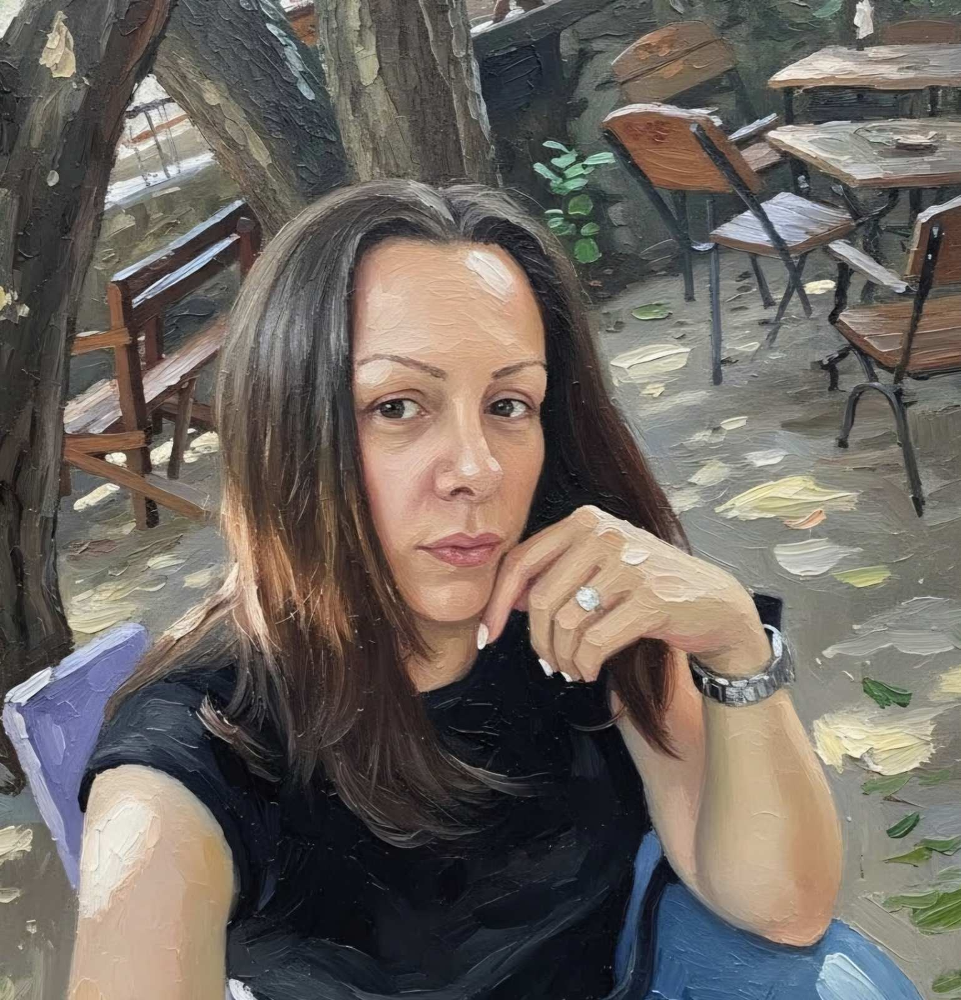

O umetnici
Milica
Novaković
Slikarstvo kao način beleženja sveta.

01
O meni
Put koji spaja obrazovanje, rad sa decom i slikarstvo.
Milica Novaković je završila Višu pedagošku školu i diplomirala likovne nauke sa temom „Likovno opažanje u srednjoškolskom uzrastu“.
Kasnije završava osnovne strukovne studije prvog stepena na studijskom programu vaspitač dece predškolskog uzrasta na Visokoj školi strukovnih studija za obrazovanje vaspitača u Kikindi.
Slikarstvo kao stalna nit.
Od 2015. do 2024. godine Milica je živela i radila u struci u inostranstvu. Po povratku u Beograd nastavlja profesionalni rad u predškolskoj ustanovi „Dečiji dani“, gde je ranije i započela svoj vaspitački put.
Ljubav prema slikarstvu povezivala je i sa radom sa decom — prikupljajući njihove likovne radove i spajajući ih u zajedničke kompozicije. Deo tih radova i danas se nalazi u centralnom vrtiću.
Ulje na platnu.
Hronologija.
Viša pedagoška škola i stručne studije za obrazovanje vaspitača.
Profesionalni rad u struci van Srbije.
Nastavak rada u predškolskoj ustanovi „Dečiji dani“ i nastavak umetničkog stvaralaštva.
Hronologiju samostalnih i grupnih izložbi dodaćemo kada budu potvrđeni tačni nazivi, godine i lokacije, kako na sajtu ne bi stajali privremeni ili izmišljeni podaci.
Događaji